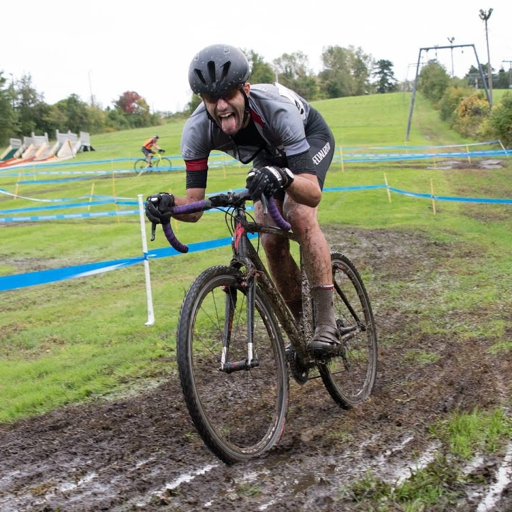

🚴 Amatuer "Athlete" 🚴
Six years ago when I moved to Boston I bought my first bike so I could commute to work. It's been all uphill since.
Over those past six years I've racked up thousands of miles, run through a half dozen bikes, started racing cyclocross, and have set my eyes set on finishing the Race Across America (RAAM) before my 40th birthday. In the meantime I'm focused on getting my USAC coaching license, chasing an eventual Cat 3 CX upgrade, and spending an crushing amount of time on the indoor trainer.
MIT Cycling Team
New England Randonneurs
Cross Results